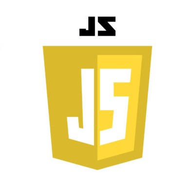

Nauka JavaScript
Czym jest JavaScript?
- JavaScript to frontendowe programowanie
- Java != JavaScript
JavaScript do Javy ma się jak świnka do świnki morskiej 😉
- Kod JS uruchamia się raz (po załadowaniu strony)
- Będziemy się uczyć ECMAScript 2015+ (ES6+)
- ECMA Script to ustandaryzowany przez organizację ECMA skryptowy język programowania
- JavaScript implementuje rzeczy ze specyfikacji ECMA Script
- Za pomocą JS można robić różne szalone rzeczy
- JavaScript składa się z:
- wartości
- literały (ang. literal)
- operacje porównywania
- zmienne
- funkcje
- obiekty